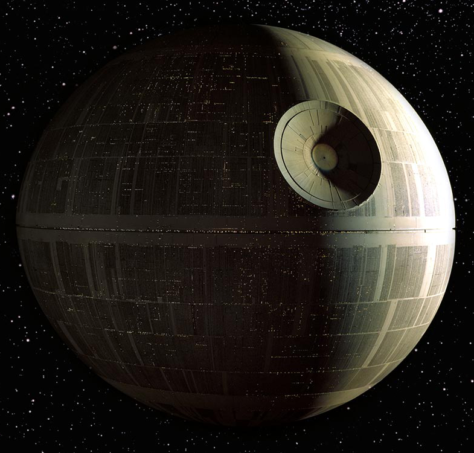

Dies ist ein Verzeichnis, welches einige der wichtigsten Star-Wars-Planeten beinhaltet.
| Coruscant | Tatooine | Naboo | Kamino | Yavin 4 | Endor | Hoth | 1. Todesstern | 2. Todesstern |

Coruscant - Hauptstadt der Republik und später des Imperiums
Tatooine - Heimat von Anakin Skywalker
Naboo - Opfer einer Invasion der Konföderation
Kamino - Heimat der Klone

Yavin 4 - Hauptstützpunkt der Rebellen-Allianz - 1. Todesstern
Endor - Schauplatz der Zerstörung des 2. Todessterns

Hoth - Standort der Echo-Basis

Erster Todesstern - Mondgroße Raumstation des Imperiums
Zweiter Todesstern - 2. Mondgroße Raumstation des Imperiums